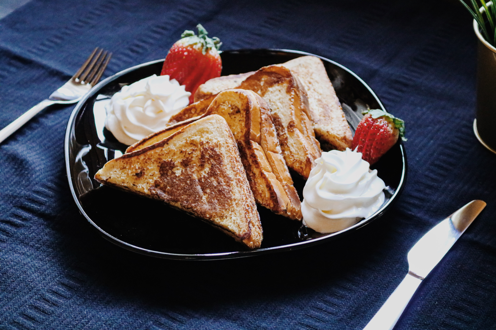

Fluffy French Toast

French toast is a dish made of sliced bread soaked in beaten eggs and
typically milk, then pan fried. Alternative names and variants include
"eggy bread", "Bombay toast", "gypsy toast", and "poor knights".
Ingredients
- ¼ cup all-purpose flour
- 11 cup milk
- 1 pinch salt
- 3 eggs
- ½ teaspoon ground cinnamon
- 1 teaspoon vanilla extract
- 1 tablespoon white sugar
- 12 thick slices bread
Recipe instructions
-
Measure flour into a large mixing bowl. Slowly whisk in the milk. Whisk
in the salt, eggs, cinnamon, vanilla extract and sugar until smooth.
- Heat a lightly oiled griddle or frying pan over medium heat.
-
Soak bread slices in mixture until saturated. Cook bread on each side
until golden brown. Serve hot.